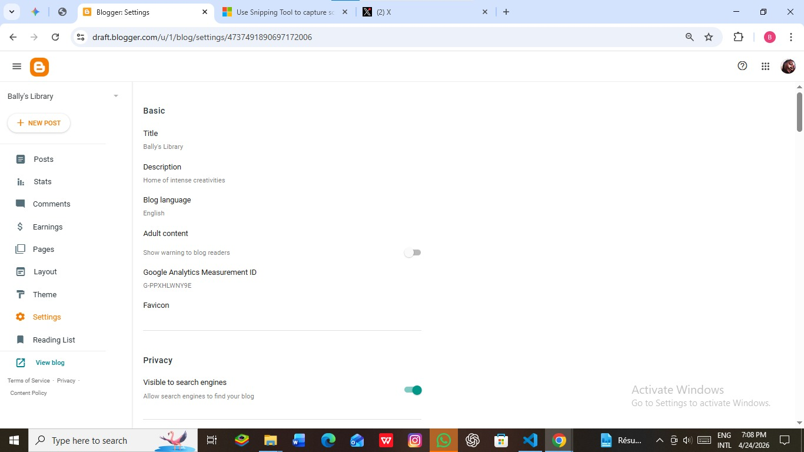
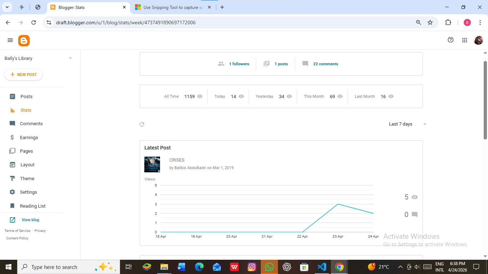

Content Strategy & Platform Management
Stratégie de Contenu & Gestion de Plateforme
Project: Bally's Library (Active since 2019)
Projet : Bally's Library (Actif depuis 2019)
Tools & Skills Applied
Outils & Compétences Appliqués
- CMS Management (Blogger): Gestion de CMS (Blogger) : Advanced customization of XML/HTML templates and layout architecture within the Google ecosystem. Personnalisation avancée des templates XML/HTML et de l'architecture de mise en page.
- SEO & Audience Growth: SEO & Croissance d'Audience : Implementation of on-page SEO, keyword research, and meta-data optimization to drive organic traffic. Mise en œuvre du SEO on-page, recherche de mots-clés et optimisation des métadonnées.
- Data Literacy: Analyse de Données : Monitoring user behavior through Blogger Analytics to adapt content strategy based on performance metrics. Suivi du comportement utilisateur via Analytics pour adapter la stratégie selon les performances.
Performance Monitoring
Suivi des Performances

Integration: Connected Google Analytics 4 (GA4) via Measurement ID to track precise audience behavior.
Intégration : Connexion de Google Analytics 4 (GA4) via l'ID de mesure pour suivre le comportement de l'audience.

Results: Monitoring over 1,150+ organic views to identify content trends and user engagement peaks.
Résultats : Suivi de plus de 1 150 vues organiques pour identifier les tendances et les pics d'engagement.
Project Roadmap (Evolution)
Roadmap du Projet (Évolution)
Launch & Branding
Lancement & Branding
Established the digital identity and core content pillars of the platform.
Établissement de l'identité numérique et des piliers de contenu de la plateforme.
Technical Optimization
Optimisation Technique
Refined the site's mobile responsiveness and enhanced internal linking for SEO.
Amélioration de la réactivité mobile et du maillage interne pour le SEO.
Professional Integration
Intégration Professionnelle
Linking the platform to a professional digital portfolio as a live asset.
Liaison de la plateforme à un portfolio professionnel.